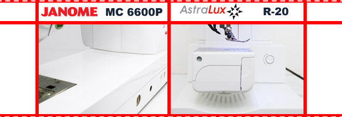
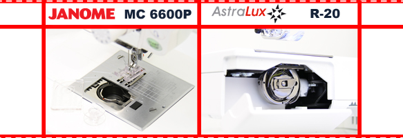

|
Возможность сочетать скорость и возможности профессиональной швейной машины, гибкость и многофункциональность бытовой - вот о чем пойдет речь на этот раз. Этот тест-драйв посвещен профессиональной серии компьютеризированного класса – Janome MC 6600 и AstraLux R 20. Если Вы по своей натуре мастерица и желаете использовать разнообразные техники шитья, такие как лоскутное шитье, квилтинг, фигурная стежка и многие другие, то Вы читаете обзор, который Вам обязательно покажется интересным. Творить без ограничений, иметь надежного помощника, который будет полностью отвечать вашим потребностям, вот что Вам действительно необходимо. Выбор сделать непросто, но надеемся мы поможем Вам облегчить эту задачу. Проведем небольшой экскурс по возможностям и удобству эксплуатации. |
|  |
|
Начнем, пожалуй, с внешнего вида и эргономики. Конечно, нельзя не отметить, что габариты машин внушают доверие и уважение. Вес каждой составляет около 17-ти килограммов. По дизайну сравниваемые машины очень похожи, вот только у AstraLux имеется съемная рукавная платформа, предоставляющая возможность шитья круглых изделий замкнутого контура. Обе машины оснащены встроенными верхними транспортерами, которые более аккуратно продвигают капризные материалы и позволяют избежать пропуск, при сшивании двух длинных лоскутов, и ненужных сборок. Всдедствие чего, мы получаем идеальную строчку и высокое качество. Коленоподъемник входит в комплект как и к 6600, так и к R 20. С его помощью Вы легко можете поднять лапку одним легким движением ноги. Это освободит Ваши руки, что очень ценится, если работать предстоит с лоскутками или наоборот - с объемным изделием. Так же аналогичны и ЛСД дисплеи. Они весьма информативные и понятные для начинающего. Дополнительный выдвижной столик присутствует только в AstraLux. |
|  |
|
Есть одно серьезное отличие этих двух моделей! AstraLux R 20 имеет челнок вертикальный двойного обегания, который устанавливается в основном только на промышленной швейной технике. Janome MC 6600 – горизонтальный ротационный. И у того, и у другого есть свои достоинства и недостатки. Хотелось бы на этом моменте остановиться поподробнее, так как этот факт может помочь Вам выбрать самый оптимальный вариант. Вертикальный челнок R 20 имеет возможность регулировки натяжения нижней нити на шпульном колпачке, натяжение в 6600 регулируется автоматически и подтянуть либо ослабить его вручную невозможно. Данную особенность можно рассматривать как недостаток при обработке капризных материалов. В обслуживании горизонтальный челнок проще, при использовании доставляет меньше хлопот. Он не нуждается в смазке, всегда видна нижняя нить (будет ясно, когда потребуется намотка шпульной нити). Жаль только, что в 6600 не предусмотрена система Drop-in (автоматическое поднятие нижней нити). Правда, обнаружено - строчка у горизонтального челнока имеет «елочку», вертикальный же челнок двойного обегания шьет более ровно. Это заметно даже невооруженному глазу человека далекого от шитья. |
|
Использовать будем хлопчатобумажную ткань. Длину стежка устанавливаем 2.5 мм, натяжение идет автоматическое, иголка под номером «75». Строчка вертикального челнока (AstraLux) выглядит более аккуратной и ровной. Горизонтальный челнок (Janome) имеет крен в правую сторону. При немаленьком количестве плюсов и своем удобстве, он по качеству проиграл профессиональным технологиям. |
|
Так сложилось, что выполнение петель изначально у Janome не занимало высоких позиций. Попробуем выметать петли глазком на трикотаже, при автоматическом натяжении. Обе машины справились с поставленной задачей. 6600 чуть зажевывая ткань, из-за этого пришлось увеличить длину стежка, выметала петлю, немного незаладилось с геометрией глазка. R20 принялся за работу сразу, используя предлагаемые настройки. Результат удовлетворил всех, кто своими глазами смог оценить внешний вид и качество выполненной операции. Конечно, все познается в сравнении. Не будем отрицать, что промышленная техника справится с представленной работой бытрее и лучше. |
|
Возьмем нитки высокого качества и самые дешевые, посмотрим как машины отреагируют на них и какую строчку дадут. Натяжение нити автоматическое, длина стежка 2,5мм, иглы «75». Нетрудно догадаться каков будет итог при использовании нитей высокого качества. А вот с иными дедо обстоит куда интереснее. AstraLux, конечно показал свой характер, порвав первый раз верхнюю нить, затем принялся шить исправно. Качество строчки оставляет желать лучшего, ожидать большего от этих ниток просто бессмысленно, как говорится: «Скупой платит дважды». Janome тоже оборвала нить, можно сказать большее - даже нитевдеватель не очень нежно с ней обошелся (просто порвал ее). Найти общий язык с этой моделью так и не получилось. После 5 –ти (!) попыток удовлетворительную строчку мы так и не получили. |
Вывод: Если Вы решили подобрать себе идеального помощника с изобилием рабочих операций, петель, декоративных, оверлочных, трикотажных, потайных строчек, различных аппликаций, возможностью выполнения пэчворка, квилтинга, вышивания монограмм, то выбор ваш верен. При приобретении любой из этих машин, Вы сможете сполна воплотить в жизнь множество идей. Главная Ваша задача - правильно подобрать тип челночного устройства. Определиться, что необходимо именно Вам... Удобство заправки и контроля объема намотки нижней нити, желание забыть про обслуживание челночного устройства? Тогда Ваша машина Janome 6600. Получить идеально ровную строчку, классический челнок промышленного образца? Отимальный выбор – AstraLux R 20. Надеемся, что мы помогли Вам сделать выбор или ,по крайней мере, наметить своего фаворита!
В данной статье мы провели сравнение швейных машинок AstraLux R 20 и Janome MC 6600. Получить информацию о сравнении других швейных машин вы можете на странице «обзоры». Сайт регулярно обновляется и дополняется новыми обзорами, не пропустите!